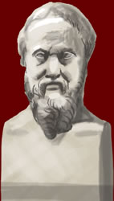

Herodotus
c.484 - 425/4 BC

Herodotus was a great traveller and visited many lands around the Mediterranean. On his journeys he collected many stories about the events and people of the past. He also recorded information about the events of the Persian War. He collected all these stories and information together in a work called The Histories.
Herodotus was the first person to research and organize information about the past in an orderly way. For this reason, he has become known as 'the father of history'.
|